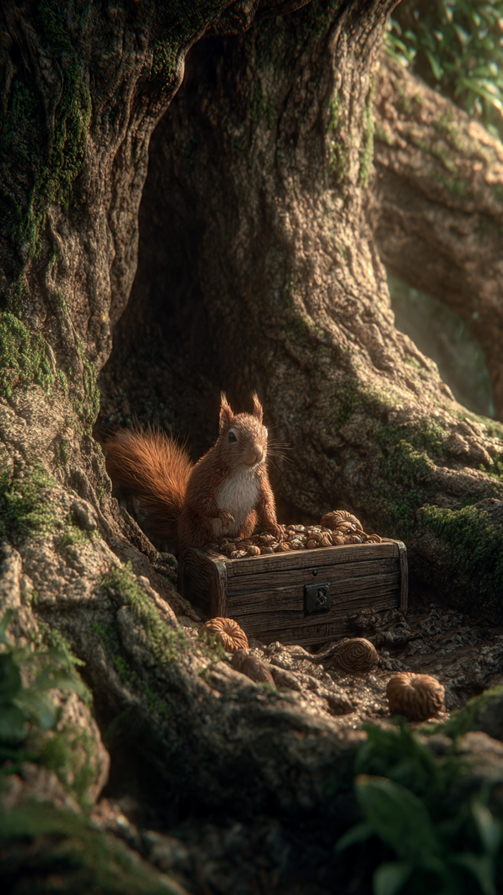
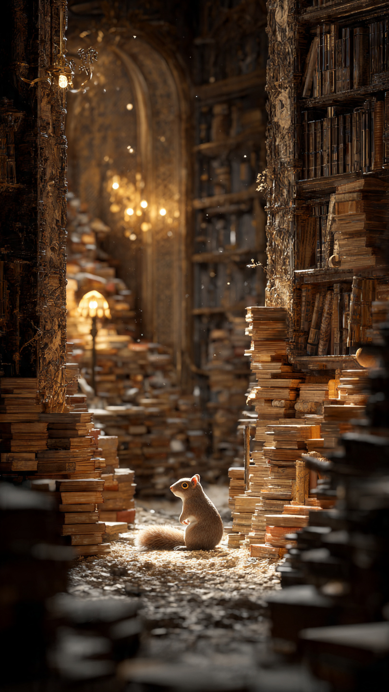

```html
🐿️ السنجاب الذي خبأ كنزًا في الشجرة العجوز | قصص أطفال
```
في غابة قديمة مليئة بالأشجار الضخمة، كان يعيش سنجاب صغير اسمه سامي.
كان سامي يحب جمع الأشياء الغريبة.
فبينما كانت السناجب الأخرى تجمع المكسرات فقط، كان هو يجمع الأوراق الملونة، والحجارة اللامعة، والأشياء التي تحمل قصصًا قديمة.
كانت هناك شجرة ضخمة في وسط الغابة، يسميها الجميع "الشجرة العجوز".
كانت أقدم شجرة في المكان، وكان الجميع يعتقد أن داخلها أسرارًا كثيرة.
كان سامي يجلس تحتها دائمًا ويقول:
"أتمنى أن أعرف ما الأسرار التي تخفيها هذه الشجرة."
وفي يوم من الأيام، بينما كان يبحث بين جذورها، وجد شيئًا غريبًا.
كان هناك صندوق خشبي صغير مخبأ بين جذور الشجرة.
فتح سامي الصندوق بحذر.
فوجد بداخله خريطة قديمة، ورسالة مكتوب عليها:
"إلى من يجد هذا الكنز..."
فتح سامي الرسالة وقرأ:
"الكنز الحقيقي لا يكون دائمًا شيئًا يمكن امتلاكه..."
"بل شيئًا يجعل العالم من حولك أفضل."
نظر سامي إلى الخريطة.
كانت تشير إلى أماكن مختلفة في الغابة، وكأنها تقوده إلى شيء مهم.
قرر أن يبدأ الرحلة.
لم يكن يعرف أن هذا الكنز سيغير حياته، وسيكشف له سرًا عن الشجرة العجوز لم يعرفه أحد من قبل.
📷 الصورة رقم 1

حمل سامي الخريطة وبدأ رحلته داخل الغابة.
كانت الخريطة تقوده من مكان إلى آخر، وفي كل مكان كان يجد علامة صغيرة تخبره أن يواصل الطريق.
وصل أولًا إلى نهر صغير.
وجد هناك حجرًا عليه علامة تشبه العلامة الموجودة على الخريطة.
عندما رفع الحجر، وجد رسالة صغيرة تقول:
"الطريق إلى الكنز يبدأ بمساعدة الآخرين."
في البداية لم يفهم سامي معنى الرسالة.
لكن بعد لحظات سمع صوتًا ضعيفًا.
كان طائرًا صغيرًا قد سقط عشه من فوق الشجرة.
توقف سامي عن البحث عن الكنز، وقرر مساعدة الطائر.
جمع الأغصان الصغيرة، وساعده في بناء عش جديد.
عندما انتهى، ظهر ضوء صغير على الخريطة.
واكتشف سامي أن طريق الكنز قد ظهر.
استمر في السير حتى وصل إلى مكان بعيد لم يزره من قبل.
كان هناك جزء مخفي من الغابة مليء بالأشجار الصغيرة والزهور النادرة.
وفي وسط المكان وجد بابًا خشبيًا قديمًا.
فتح سامي الباب ببطء.
في الداخل وجد غرفة مليئة بالكتب والصور القديمة.
كانت هناك قصص عن الغابة وعن الحيوانات التي عاشت فيها منذ مئات السنين.
ثم وجد كتابًا كبيرًا يحمل اسم الشجرة العجوز.
فتح الكتاب، وقرأ شيئًا جعله يشعر بالدهشة.
لقد اكتشف أن الشجرة العجوز لم تكن مجرد شجرة...
بل كانت حارسة أسرار الغابة منذ زمن طويل.
📷 الصورة رقم 2

واصل سامي قراءة الكتاب القديم.
اكتشف أن الشجرة العجوز كانت تحفظ ذكريات الغابة منذ مئات السنين.
كل لحظة جميلة، وكل مساعدة قدمها حيوان لآخر، كانت محفوظة داخلها.
وفي آخر صفحة وجد رسالة مكتوبة:
"سيأتي يوم يجد فيه سنجاب صغير هذا الكنز..."
"وسيعرف أن أعظم الكنوز هي الأعمال الطيبة التي نتركها خلفنا."
ابتسم سامي.
فهم أخيرًا معنى الرسالة التي وجدها في بداية الرحلة.
فالكنز لم يكن ذهبًا أو جواهر...
بل كان معرفة قيمة مساعدة الآخرين.
عاد سامي إلى الشجرة العجوز وهو يحمل الكتاب معه.
وعندما وصل، بدأت أوراق الشجرة تلمع، وكأنها كانت تنتظره.
سمع صوتًا هادئًا يقول:
"لقد وجدت الكنز يا سامي."
نظر حوله بدهشة وقال:
"لكنني لم أجد شيئًا ثمينًا."
أجابت الشجرة:
"بل وجدت شيئًا لا يقدر بثمن..."
"وجدت قلبًا يعرف معنى العطاء."
منذ ذلك اليوم، أصبح سامي يحكي للحيوانات الصغيرة قصته.
وكان يأخذهم إلى الشجرة العجوز ليعلمهم أن كل عمل طيب يترك أثرًا جميلًا.
ومع مرور السنوات، أصبح سامي حارسًا جديدًا لأسرار الغابة.
ولم يكن يحرس كنزًا من الذهب...
بل كان يحرس أجمل شيء في العالم:
ذكريات الخير والصداقة.
🐿️🌳 انتهت القصة 🌳🐿️
العبرة:
أجمل الكنوز ليست الأشياء التي نملكها، بل الخير الذي نقدمه للآخرين.